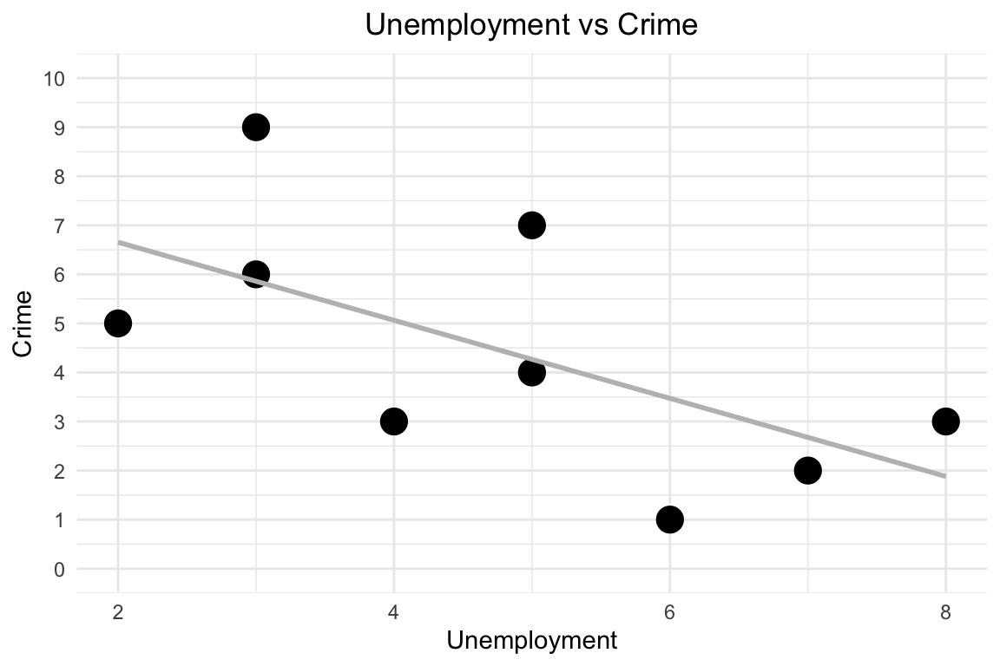

Chapter 8 Week 8: Causality III (Observational Data)
8.1 Aims
- Using simulated data to instantiate the logic behind, diff-in-diff and panel data (i.e., within, between, and twoway fixed effects) methods.
- Using real data to estimate a causal effect using a two’way fixed effects model.
8.2 Exercise
8.2.1 Simulated data
The following data is NOT real and is inspired by Ben Lambert’s video on fixed effects (see here). It’s purpose is simply to illustrate the logic og the fixed effects models.
data <- list(
City = c('NYC', 'NYC', 'NYC', 'Boston', 'Boston', 'Boston', 'Amherst', 'Amherst', 'Amherst'),
Time = c(1, 2, 3, 1, 2, 3, 1, 2, 3),
Unemployment = c(2, 3, 3, 4, 5, 5, 6, 7, 8),
Crime = c(5, 6, 9, 3, 4, 7, 1, 2, 3),
Treatment = c(0, 0, 1, 0, 0, 1, 0, 0, 0)
)
df <- data.frame(data)
# Overall averages
df <- df %>%
mutate(Y_OverallAverage = mean(Crime),
X_OverallAverage = mean(Unemployment))
# Within averages
df <- df %>%
group_by(City) %>%
mutate(Y_WithinAverage = mean(Crime),
X_WithinAverage = mean(Unemployment))
# Between averages
df <- df %>%
group_by(Time) %>%
mutate(Y_BetweenAverage = mean(Crime),
X_BetweenAverage = mean(Unemployment))
df<- df %>%
mutate( Y_demeaned_within = Crime-Y_WithinAverage,
Y_demeaned_between = Crime-Y_BetweenAverage,
Y_double_demeaned = Crime-Y_WithinAverage-Y_BetweenAverage+Y_OverallAverage,
X_demeaned_within = Unemployment-X_WithinAverage,
X_demeaned_between = Unemployment-X_BetweenAverage,
X_double_demeaned = Unemployment-X_WithinAverage-X_BetweenAverage+X_OverallAverage
)First the basic graph
ggplot(df, aes(x = Unemployment, y = Crime)) +
geom_point(size = 5) +
geom_smooth(method = "lm", formula = y ~ x, se = FALSE, color = "gray") + # Adding the regression line
scale_y_continuous(
limits = c(0, 10),
breaks = seq(0, 10, by = 1)) +
theme_minimal()+
theme(plot.title = element_text(hjust = 0.5)) +
labs(title = "Unemployment vs Crime",
x = "Unemployment",
y = "Crime"
)
Now use shapes for distinguishing cities.
ggplot(df, aes(x = Unemployment, y = Crime)) +
geom_point(aes(shape = factor(City)), size = 5) + # Apply shape by City only to points
geom_smooth(method = "lm", formula = y ~ x, se = FALSE, color = "gray") + # Regression line for all data
scale_y_continuous(
limits = c(0, 10),
breaks = seq(0, 10, by = 1)) +
theme_minimal() +
theme(plot.title = element_text(hjust = 0.5)) +
labs(title = "Unemployment vs Crime by City and Time",
x = "Unemployment",
y = "Crime",
shape = "City")
Now also use color for distinguishing also periods.
ggplot(df, aes(x = Unemployment, y = Crime)) +
geom_point(aes(shape = factor(City), color = factor(Time)), size = 5) + # Apply shape by City only to points
scale_color_manual(values = c("gold", "orange", "red")) +
geom_smooth(method = "lm", formula = y ~ x, se = FALSE, color = "gray") + # Regression line for all data
scale_y_continuous(
limits = c(0, 10),
breaks = seq(0, 10, by = 1)) +
theme_minimal() +
theme(plot.title = element_text(hjust = 0.5)) +
labs(title = "Unemployment vs Crime by City and Time",
x = "Unemployment",
y = "Crime",
color = "Time",
shape = "City")
All previous regressions are counter intuitive, why?. Now restrict the regression to each city. What does this suggest regarding the ability of linear regression to capture relations between our variables of interest this scenario? Can we use a regression regardless of how we frame it? Is theory important for guiding how the regression is used? If so, in this case, how?
ggplot(df, aes(x = Unemployment, y = Crime, color = factor(Time), shape = factor(City))) +
geom_point(size = 5) +
scale_color_manual(values = c("gold", "orange", "red")) +
geom_smooth(method = "lm", formula = y ~ x, se = FALSE, color = "gray") + # Adding the regression line
scale_y_continuous(
limits = c(0, 10),
breaks = seq(0, 10, by = 1)) +
labs(title = "Unemployment vs Crime by City and Time",
x = "Unemployment",
y = "Crime",
color = "Time",
shape = "City") +
theme_minimal()Now, having seen how regressions are theory dependent for defining how they are framed, let’s see how fixed effects work.
Assume that the data generating process behind the relation between unemployment and crime is given by the following formula.
\[Y_{it}=\alpha_{i}+\beta_{t}+\gamma_{it}X_{it}+\epsilon_{it}\] With \[t=1, ..., T\] and \[i=1, ..., N\]
Where \(Y_{it}\) is crime for city \(i\) at time \(t\), \(\alpha_{i}\) is a time invariant unobservable (or unobserved) factor influencing the levels of crime in city \(i\) (i.e., it’s influence is constant across all periods). \(\beta_{t}\) is a city invariant unobservable (or unobserved) factor influencing the levels of crime at period \(t\) (i.e., it’s influence is constant across all cities). \(\gamma_{it}\) is the marginal effect of \(X_{it}\), the unemployment level at city \(i\) in period \(t\). Finally, \(\epsilon_{it}\) is the residual for city \(i\) in period \(t\)
Thus, in order to get rid of the time invariant factor, we can implement the following transformation.
\(\bar{X}_{i.} = \frac{1}{T}*sum_{t=1}^{T} X_{it}.\)
perhaps showing only the within case is enough? I’m considering to use this paper, particularly page 8.
Plus vertical line for within mean values.
X_WithinAverage_NYC = df$X_WithinAverage[df$City=='NYC'][1]
X_WithinAverage_Boston = df$X_WithinAverage[df$City=='Boston'][1]
X_WithinAverage_Amherst = df$X_WithinAverage[df$City=='Amherst'][1]
ggplot(df, aes(x = Unemployment, y = Crime, color = factor(Time), shape = factor(City))) +
geom_point(size = 5) +
scale_color_manual(values = c("gold", "orange", "red")) +
geom_smooth(method = "lm", formula = y ~ x, se = FALSE, color = "gray") + # Adding the regression line
geom_vline(xintercept = X_WithinAverage_NYC, linetype = "dashed", color = "lightgray") + # Vertical line at the mean of
geom_vline(xintercept = X_WithinAverage_Boston, linetype = "dashed", color = "lightgray") + # Vertical line at the mean of
geom_vline(xintercept = X_WithinAverage_Amherst, linetype = "dashed", color = "lightgray") + # Vertical line at the mean of
scale_y_continuous(
limits = c(0, 10),
breaks = seq(0, 10, by = 1)) +
labs(title = "Unemployment vs Crime by City and Time",
x = "Unemployment",
y = "Crime",
color = "Time",
shape = "City") +
theme_minimal()Demeaned within unemployment.
ggplot(df, aes(x = X_demeaned_within, y = Crime, color = factor(Time), shape = factor(City))) +
geom_point(size = 5) +
scale_color_manual(values = c("gold", "orange", "red")) +
geom_smooth(method = "lm", formula = y ~ x, se = FALSE, color = "gray") + # Adding the regression line
scale_y_continuous(
limits = c(0, 10),
breaks = seq(0, 10, by = 1)) +
labs(title = "Demeaned within unemployment vs Crime by City and Time",
x = "Demeaned unemployment",
y = "Crime",
color = "Time",
shape = "City") +
theme_minimal()Also demeaned within crime.
ggplot(df, aes(x = X_demeaned_within, y = Y_demeaned_within)) +
geom_point(aes(shape = factor(City), color = factor(Time)), size = 5) +
scale_color_manual(values = c("gold", "orange", "red")) +
geom_smooth(method = "lm", formula = y ~ x, se = FALSE, color = "gray") + # Adding the regression line
labs(title = "Demeaned unemployment vs Demeaned crime by City and Time (within )",
x = "Demeaned unemployment",
y = "Demeaned crime",
color = "Time",
shape = "City") +
theme_minimal()Unemployment over time with horizontal line for between mean values.
X_BetweenAverage_T1 = df$X_BetweenAverage[df$Time=='1'][1]
X_BetweenAverage_T2 = df$X_BetweenAverage[df$Time=='2'][1]
X_BetweenAverage_T3 = df$X_BetweenAverage[df$Time=='3'][1]
ggplot(df, aes(x = Time, y = Unemployment, color = factor(Time), shape = factor(City))) +
geom_point(size = 5) +
scale_color_manual(values = c("gold", "orange", "red")) +
geom_smooth(method = "lm", formula = y ~ x, se = FALSE, color = "gray") + # Adding the regression line
geom_hline(yintercept = X_BetweenAverage_T1, linetype = "dashed", color = "gold") + # Vertical line at the mean of
geom_hline(yintercept = X_BetweenAverage_T2, linetype = "dashed", color = "orange") + # Vertical line at the mean of
geom_hline(yintercept = X_BetweenAverage_T3, linetype = "dashed", color = "red") + # Vertical line at the mean of
labs(title = "Time vs Unemployment by City and Time",
x = "Time",
y = "Unemployment",
color = "Time",
shape = "City") +
theme_minimal()
Crime over time with horizontal line for between mean values.
Y_BetweenAverage_T1 = df$Y_BetweenAverage[df$Time=='1'][1]
Y_BetweenAverage_T2 = df$Y_BetweenAverage[df$Time=='2'][1]
Y_BetweenAverage_T3 = df$Y_BetweenAverage[df$Time=='3'][1]
ggplot(df, aes(x = Time, y = Crime, color = factor(Time), shape = factor(City))) +
geom_point(size = 5) +
scale_color_manual(values = c("gold", "orange", "red")) +
geom_smooth(method = "lm", formula = y ~ x, se = FALSE, color = "gray") + # Adding the regression line
geom_hline(yintercept = Y_BetweenAverage_T1, linetype = "dotted", color = "lightgray") + # Vertical line at the mean of
geom_hline(yintercept = Y_BetweenAverage_T2, linetype = "twodash", color = "lightgray") + # Vertical line at the mean of
geom_hline(yintercept = Y_BetweenAverage_T3, linetype = "dashed", color = "lightgray") + # Vertical line at the mean of
labs(title = "Time vs Crime by City and Time",
x = "Time",
y = "Crime",
color = "Time",
shape = "City") +
theme_minimal()Demeaned unemployment over time with horizontal line for between mean values.
ggplot(df, aes(x = Time, y = X_demeaned_between, color = factor(Time), shape = factor(City))) +
geom_point(size = 5) +
scale_color_manual(values = c("gold", "orange", "red")) +
geom_smooth(method = "lm", formula = y ~ x, se = FALSE, color = "gray") + # Adding the regression line
labs(title = "Time vs demeaned between unemployment by City and Time",
x = "Time",
y = "Demeaned unemployment",
color = "Time",
shape = "City") +
theme_minimal()Demeaned crime over time with horizontal line for between mean values.
ggplot(df, aes(x = Time, y = Y_demeaned_between, color = factor(Time), shape = factor(City))) +
geom_point(size = 5) +
scale_color_manual(values = c("gold", "orange", "red")) +
geom_smooth(method = "lm", formula = y ~ x, se = FALSE, color = "gray") + # Adding the regression line
# scale_y_continuous(
# limits = c(0, 10),
# breaks = seq(0, 10, by = 1)) +
labs(title = "Time vs demeaned between crime by City and Time",
x = "Time",
y = "Demeaned crime",
color = "Time",
shape = "City") +
theme_minimal()Demeaned crime over time with horizontal line for between mean values. Very hard to interpret!
ggplot(df, aes(x = X_demeaned_between, y = Y_demeaned_between)) +
geom_point(aes(shape = factor(City), color = factor(Time)), size = 5) + # Apply shape by City only to points
scale_color_manual(values = c("gold", "orange", "red")) +
geom_smooth(method = "lm", formula = y ~ x, se = FALSE, color = "gray") + # Adding the regression line
labs(title = "Demeaned unemployment vs demeaned crime by City and Time (between)",
x = "Demeaned unemployment",
y = "Demeaned crime",
color = "Time",
shape = "City") +
theme_minimal()
Missing!! all demeaned (i.e., twoway fixed effects)
8.2.2 Real data
df1 <- swissdd::get_nationalvotes(geolevel = "national", from_date="2000-03-12", to_date = "2015-06-14")
df1<- df1 %>%
select("stimmbeteiligungInProzent","votedate")
df1 <- dplyr::rename(df1, Y_National_BetweenAverage = stimmbeteiligungInProzent, vote_date = votedate)
ballot_days_final <- readRDS("Data/replication/data/ballot_days_final.rds")
ballot_days_final <- inner_join(ballot_days_final, df1, by="vote_date")
ballot_days_final <- ballot_days_final %>%
group_by(muninr) %>%
mutate(Y_municipal_WithinAverage = mean(turnout, na.rm = TRUE),
X_municipal_WithinAverage = mean(postage, na.rm = TRUE))
ballot_days_final <- ballot_days_final %>%
mutate(Y_National_OverallAverage = mean(turnout, na.rm = TRUE),
X_National_OverallAverage = mean(postage, na.rm = TRUE))
ballot_days_final <- ballot_days_final %>%
group_by(vote_date) %>%
mutate(X_National_BetweenAverage = mean(postage, na.rm = TRUE))
ballot_days_final<- ballot_days_final %>%
mutate( Y_demeaned_within = turnout-Y_municipal_WithinAverage,
Y_demeaned_between = turnout-Y_National_BetweenAverage,
Y_double_demeaned = turnout-Y_municipal_WithinAverage-Y_National_BetweenAverage+Y_National_OverallAverage,
X_demeaned_within = postage-X_municipal_WithinAverage,
X_demeaned_between = postage-X_National_BetweenAverage,
X_double_demeaned = postage-X_municipal_WithinAverage-X_National_BetweenAverage+X_National_OverallAverage
)Results: One way fixed effects: within
# One way fixed effects: within
OW_FE_WI <- lm(Y_demeaned_within ~ X_demeaned_within - 1, data = ballot_days_final)
summary(OW_FE_WI)##
## Call:
## lm(formula = Y_demeaned_within ~ X_demeaned_within - 1, data = ballot_days_final)
##
## Residuals:
## Min 1Q Median 3Q Max
## -37.03 -6.53 -0.03 6.67 53.07
##
## Coefficients:
## Estimate Std. Error t value Pr(>|t|)
## X_demeaned_within 1.46 0.15 9.73 <2e-16 ***
## ---
## Signif. codes: 0 '***' 0.001 '**' 0.01 '*' 0.05 '.' 0.1 ' ' 1
##
## Residual standard error: 10.01 on 89319 degrees of freedom
## (1210 observations deleted due to missingness)
## Multiple R-squared: 0.001059, Adjusted R-squared: 0.001048
## F-statistic: 94.67 on 1 and 89319 DF, p-value: < 2.2e-16Results: One way fixed effects: between
# One way fixed effects: between
OW_FE_BE <- lm(Y_demeaned_between ~ X_demeaned_between - 1, data = ballot_days_final)
summary(OW_FE_BE)##
## Call:
## lm(formula = Y_demeaned_between ~ X_demeaned_between - 1, data = ballot_days_final)
##
## Residuals:
## Min 1Q Median 3Q Max
## -32.706 -6.728 -2.224 2.430 48.172
##
## Coefficients:
## Estimate Std. Error t value Pr(>|t|)
## X_demeaned_between 1.3944 0.1132 12.32 <2e-16 ***
## ---
## Signif. codes: 0 '***' 0.001 '**' 0.01 '*' 0.05 '.' 0.1 ' ' 1
##
## Residual standard error: 7.553 on 89319 degrees of freedom
## (1210 observations deleted due to missingness)
## Multiple R-squared: 0.001696, Adjusted R-squared: 0.001685
## F-statistic: 151.8 on 1 and 89319 DF, p-value: < 2.2e-16Results: Two way fixed effects: between
# Two way fixed effects: between
TW_FE <- lm(Y_double_demeaned ~ X_double_demeaned - 1, data = ballot_days_final)
summary(TW_FE)##
## Call:
## lm(formula = Y_double_demeaned ~ X_double_demeaned - 1, data = ballot_days_final)
##
## Residuals:
## Min 1Q Median 3Q Max
## -32.706 -6.728 -2.224 2.430 48.172
##
## Coefficients:
## Estimate Std. Error t value Pr(>|t|)
## X_double_demeaned 1.3944 0.1132 12.32 <2e-16 ***
## ---
## Signif. codes: 0 '***' 0.001 '**' 0.01 '*' 0.05 '.' 0.1 ' ' 1
##
## Residual standard error: 7.553 on 89319 degrees of freedom
## (1210 observations deleted due to missingness)
## Multiple R-squared: 0.001696, Adjusted R-squared: 0.001685
## F-statistic: 151.8 on 1 and 89319 DF, p-value: < 2.2e-16Introduce here the estimation using plm